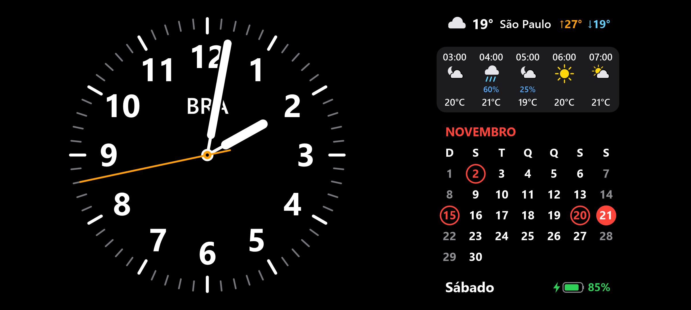
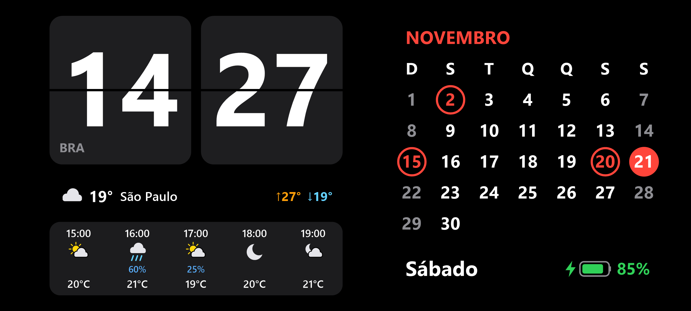
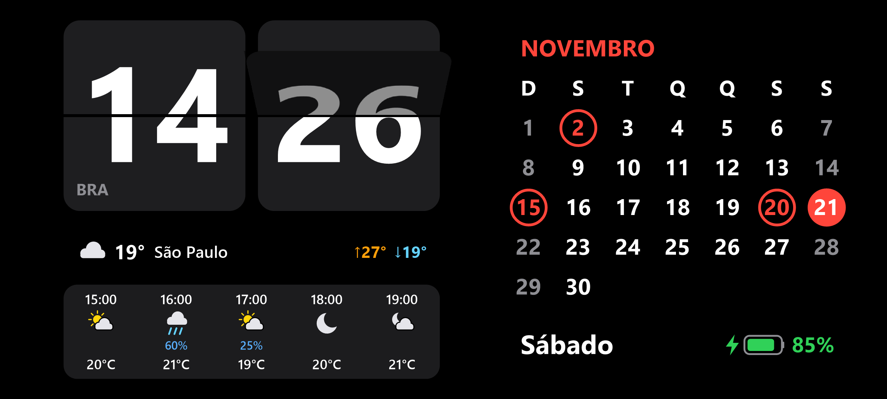
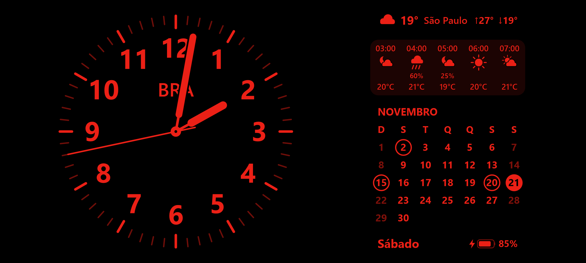
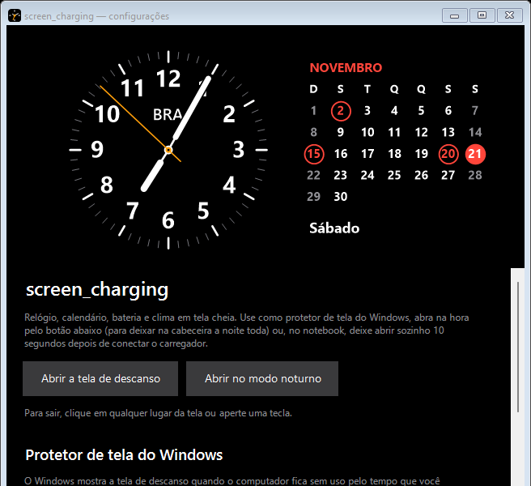

screen_charging para Windows — Protetor de Tela e Relógio de Mesa
Versão para Windows do screen_charging do Android, com a mesma tela e o mesmo visual: relógio analógico ou digital no estilo flip, calendário do mês com os feriados nacionais, clima com previsão das próximas 5 horas e bateria do notebook. Funciona como protetor de tela do Windows (com miniatura ao vivo e botão de configurações na janela do próprio Windows), abre na hora pelo app para deixar o monitor na cabeceira a noite toda e, no notebook, abre sozinho 10 segundos depois de conectar o carregador. Tudo num único executável de cerca de 150 KB, sem bibliotecas externas.
🖥️ Visão Geral da Interface

🕰️ Relógio, Clima, Previsão, Calendário e Bateria numa Olhada Só
Relógio analógico com ponteiro de segundos suave à esquerda; à direita, clima atual com máxima e mínima, previsão das próximas 5 horas com chance de chuva, calendário do mês com os feriados marcados e o dia da semana com a bateria.

🔢 Cartões que Viram a Cada Minuto
Horas e minutos em cartões grandes, como nos relógios flip antigos, com o clima e a previsão embaixo e o calendário ao lado.

🎞️ Virada com Profundidade
O GDI+ não tem perspectiva: a aba que vira é desenhada em faixas, cada uma na escala da sua distância, com sombra conforme se inclina.

🔴 Modo Noturno Automático
No horário escolhido (padrão das 22:00 às 06:00), tudo fica vermelho e escuro, para não ofuscar nem atrapalhar o sono.

🎛️ Miniatura ao Vivo e Cada Elemento Liga e Desliga
Abre pelo botão “Configurações” da janela de proteção de tela do Windows, como num protetor nativo. Estilo do relógio, segundos, sigla do país, bateria, calendário, clima, cidade e previsão.
Principais Funcionalidades
Protetor de tela nativo do Windows:
- Aparece sempre na lista da janela “Proteção de tela”, com miniatura ao vivo no monitorzinho, botão Configurações e Visualizar.
- Cobre todos os monitores e fecha ao mexer o mouse ou apertar uma tecla.
Na cabeceira a noite toda: botão “Abrir a tela de descanso”, que mantém a tela ligada e impede o computador de dormir. Um clique fecha.
Abertura automática no notebook: um monitor em segundo plano (ícone perto do relógio do Windows) detecta o carregador, espera 10 segundos e abre a tela; fecha ao desconectar. Opção de só abrir com o computador sem uso.
Clima automático:
- Localização do Windows, arredondada para cerca de 1 km; clima do Open-Meteo e nome da cidade pela BigDataCloud, ambos gratuitos e sem chave.
- Ou a cidade escolhida pelo nome, sem usar a localização.
Calendário com feriados nacionais: datas fixas e móveis (Carnaval, Sexta-feira Santa e Corpus Christi a partir da Páscoa), com o nome do feriado do mês ao lado do título.
Cuidados com a tela: o desenho se desloca alguns pixels a cada minuto, evitando marcas em monitores OLED.
⚡ Desenhando Só o Que Muda
Como no Android, a parte parada da tela (números, calendário, clima, bateria) fica numa imagem refeita no máximo uma vez por minuto; a cada quadro o app redesenha apenas a área do relógio. Na tomada, cerca de 60 quadros por segundo; na bateria, 20, com o ponteiro dos segundos ainda deslizando. No relógio flip, a tela só é redesenhada enquanto um cartão vira.
🛠️ Especificações Técnicas
- Linguagem: C# com Windows Forms e GDI+ no .NET Framework 4.8 (já incluso no Windows 10 e 11), sem bibliotecas externas
- Um executável, vários modos: configurações, protetor de tela (
/s), miniatura (/p), tela de descanso, monitor do carregador, instalação e desinstalação - Integração com o Windows: Win32 API (janela filha na miniatura do painel, DPI por monitor,
SetThreadExecutionState, ociosidade do mouse e teclado), localização do Windows e recursos nativos gerados no build para o nome na lista de protetores - Clima: Open-Meteo (CC BY 4.0) e BigDataCloud, sem chave de API
- Instalador: próprio, por usuário e sem administrador, com atalho no Menu Iniciar e desinstalação em “Aplicativos instalados”; testado com o Controle Inteligente de Aplicativos do Windows 11 ligado
- Qualidade: testes automáticos (feriados, horários, clima e 128 combinações de desenho da tela) e guia de manutenção
AGENTS.mdpara qualquer assistente de IA
📂 Estrutura de Arquivos do Projeto
protetor_tela/
├── README.md # Apresentação e documentação completa
├── AGENTS.md # Guia de manutenção para pessoas e assistentes de IA
├── LICENSE # Licença comercial proprietária
├── screen_charging.sln
├── src/
│ ├── Directory.Build.props # Versão única do app e do instalador
│ ├── ScreenCharging/
│ │ ├── StandbyRenderer.cs # Relógio, flip, calendário, clima e bateria em GDI+
│ │ ├── StandbyForm.cs # Tela cheia, protetor de tela e miniatura do Windows
│ │ ├── SettingsForm.cs # Configurações com miniatura ao vivo
│ │ ├── ChargingMonitor.cs # Abre 10 s após conectar o carregador
│ │ ├── WeatherRepository.cs # Open-Meteo e busca de cidades
│ │ ├── AutoLocation.cs # Localização do Windows e nome da cidade
│ │ ├── Holidays.cs # Feriados nacionais a partir da Páscoa
│ │ └── Installer.cs # Instalar, desinstalar e registrar o protetor
│ └── Setup/ # Instalador com o app embutido
├── tests/ # Testes automáticos
├── tools/ # Build, testes, prints e release
├── installer/ # Instalador da versão atual
└── docs/ # Histórico de versões e prints
🚀 Como Instalar
- Rode o
screen_charging-setup.exe. Instala só para o seu usuário, sem pedir administrador (a opção de aparecer sempre na lista de protetores do Windows pede permissão uma vez). - O clima aparece sozinho pela localização do Windows; se preferir, escolha a cidade pelo nome.
- Pronto: o screen_charging já é o protetor de tela. Para a cabeceira, abra o app e clique em “Abrir a tela de descanso”.
Em fase de testes, ainda sem distribuição pública.
🔄 Diretrizes de Versionamento Git (Multi-IA)
- Branch
dev: Branch ativa de trabalho para desenvolvimento, novos recursos e documentação. - Branch
main: Branch estável de lançamento. O merge dedevparamainé realizado exclusivamente mediante solicitação explícita do usuário.